1.2.3¶
1.2.3
- Fixed: "Smooth Affected Only" had no effect on a full selection and could spread weight further on a partial one. Smooth now keeps empty vertices empty and adds no new bones to a vertex.
1.2.2¶
1.2.2
Surface Brush¶
- Improved: Surface Brush: Automatically isolates front and back surfaces to prevent weight bleeding while brushing.
Keep Volume¶
- Improved: Resolved depth conflicts so the innermost layer always leads and layers never swap roles, preventing the ping-pong effect.
- Improved: "Connected Only" option now maintains Keep Volume independently per piece.
- Changed: Brushes and selections now strictly affect vertices within their bounds.
- Fixed: Sharpen Weight brush no longer breaks seam welds when Keep Volume is enabled.
Others¶
- Improved: "Mirror All Layers" and "Always Show Bone HUD" settings now save app-wide (Preferences).
- Improved: "Front Face Only (Lasso)", "Sync with Edit Mode Selection", "Move Weight by Name", and "Limit Total's Max Influences" settings now save per scene in the
.blendfile.
1.2.1¶
1.2.1
- Added: "Sync with Edit Mode Selection" in Vertex Mode header to share selection and hidden vertices with Edit Mode.
- Improved: Deform bone selection sync across Pose Mode and Weight Paint.
- Improved: Independent Strength Pressure for Surface (On by default) and Projected brushes (Off by default).
- Fixed: Resolved shortcut conflicts with native Blender tools—now restricted to Brush and Vertex modes.
1.2.0 ( Minor Update )¶
1.2.0 ( Minor Update )
Brush Paint Update¶
- Falloff Preset¶

Removed Options
- Old falloff pressure and falloff sliders have been removed.
- Removed size pressure since strength pressure is usually enough for weight painting.
- Connected Only Option for Brush¶
You can now check the "Connected Only" option. This limits your weight painting to only affect the connected surface parts.


- Support Off-Mesh Painting when using Surface Brush¶
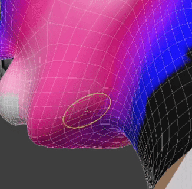
- Brush HUD Color Customization¶
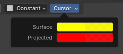
Enhanced Sharpen Weight¶
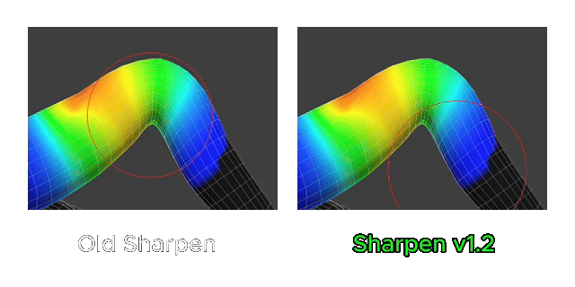
New Behavior: Keep Volume¶
- Easily Paint Weight Clothes!¶

- Supports both Brush and Vertex modes¶

- Keep Separate Surface Selection as One¶

UX&UI Improvement¶
- Update Behavior Across Vertex Selection and Brush Mode¶
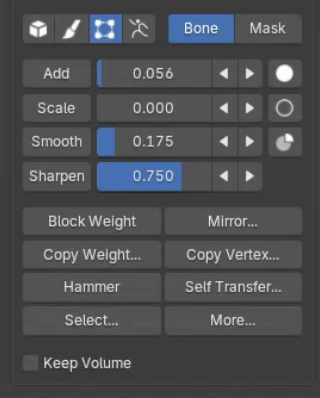
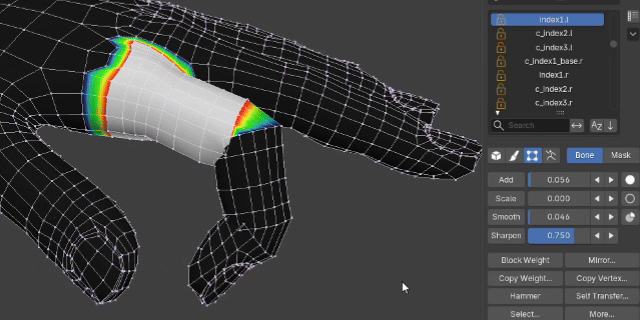
Note
To keep things clean, we removed add vertex selection, remove selection, and hide/unhide mesh features from brush mode. Those tasks now belong fully to vertex mode.
- Weight Steps¶


- Refine Slider Pop-up UI¶


- Select Multiple Bones Faster with Lasso¶
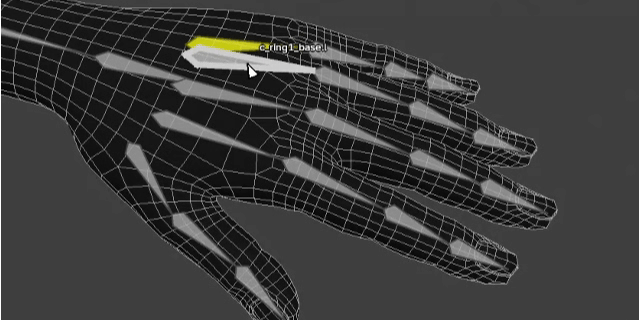
- Add Bone HUD Color Customization¶
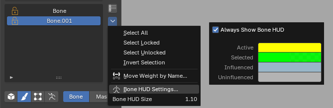
- Add Mirror to All Layers Option¶
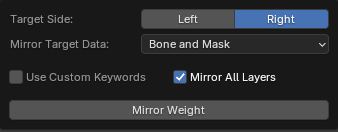
- Add Show Shortcut Hint Option¶
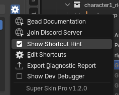
Other Improvements¶
- Improved smooth weight to work much better on dense topology meshes without needing overly high smooth settings.
- Improved the block weight algorithm for the face ring option.
- Improved the UI so self-transfer is easier to use without needing to toggle out to set a new source.
- Improved camera rotation to be more easier to control.
- Improved mirror weight performance.
- Removed smooth and repeat options from block weight since they duplicated the regular smooth buttons in the N-panel.
- Fixed a bug where block weight popups could not edit past values if a bone was selected after using block weight.
- Fixed the right-click popup in brush and vertex modes where settings would close immediately after changing them.
- Fixed shortcut bugs where add-on shortcuts leaked into native Blender weight paint mode.
- Fixed vertex weight operation gestures to be more compatible with pen tablets.
- Prevented native brush settings popups from showing up when pressing Alt+F, Shift+F, or Ctrl+F.
1.1.7¶
1.1.7
-
Fixed: While weight painting, orbiting now rotates around the bone you last selected or the spot you last painted.
-
Fixed: The Bake popup is shorter and narrower, with a Bake button instead of OK.
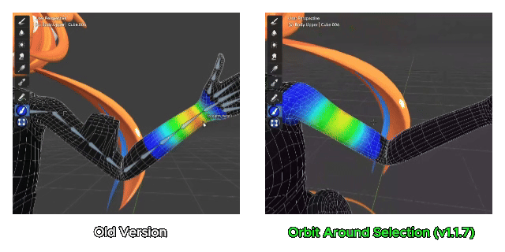
1.1.6¶
1.1.6
- Fixed: with Orbit Around Selection turned on, orbiting during weight painting rotated around the character’s origin. It now rotates around the view center.
1.1.5¶
1.1.5
-
Fixed: Pressing Numpad . during Weight Paint mode now centers the view on the mesh weighted to the active bone, allowing orbiting directly around that bone.
-
Fixed: The Bone HUD skeleton is now rendered beneath the viewport HUD text to keep the text readable.
1.1.4¶
1.1.4
-
Fixed: Importing weights no longer opens the file browser a second time after the import completes.
-
Import now opens the file browser directly. Import settings (Method, Preserve Existing Layers) are in an Options section of the file browser's side panel.
-
Import and Export are only enabled when a mesh is selected in the viewport. Export also requires the mesh to contain layer data.
1.1.3¶
1.1.3
-
Add, Scale and Smooth now show a warning in the status bar when weight could not be distributed or pulled from other bones, or when Smooth found nothing to change, with a hint that some bones may be locked
-
Edit Weight Mode now shows how many vertices are hidden at the bottom of the viewport until they are revealed
-
The Deform Bones list is now locked outside Edit Weight Mode and can only be used while editing weights
-
Select Locked and Select Unlocked now show a message when no bone matches
-
Fixed Select Locked and Select Unlocked clearing the current bone selection when no bone matched
-
Fixed the add-on panel shifting up slightly when switching to Pose Mode
1.1.2¶
1.1.2
-
Improve toast HUD for Limit Total, Normalize, and Selection tools
-
Fix "Weight brush not found" warning when entering Weight Paint mode
-
Add documentation link to the add-on manifest and remove the Gumroad link button from the UI
1.1.1¶
1.1.1
- Restore the "Preserve Existing Layers" option in the Import Weight dialog
1.1.0 ( Minor Update )¶
1.1.0 ( Minor Update )
Mirror Weight Settings Update¶
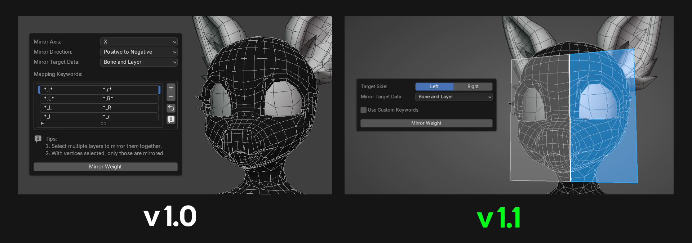
- Since Blender mostly mirrors in the X-axis anyway, we made the mirror weight options simpler.
- Added a target side HUD preview: the blue plane area shows the target side for mirroring.
- The "Use Custom Keywords" option is now an optional setting, intended only for users who use keywords that differ greatly from the standard ones. General users no longer need to configure this.
Bone Hud Update¶
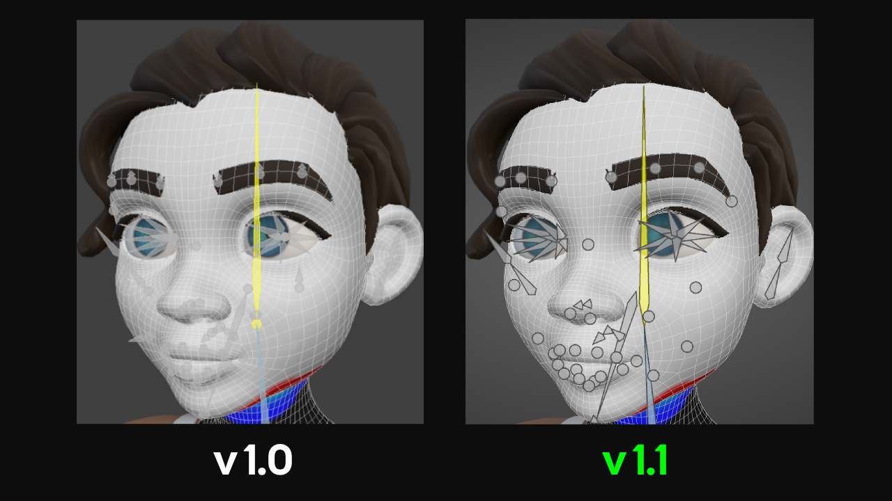
- Improved the Bone HUD display to make it clearer to see.
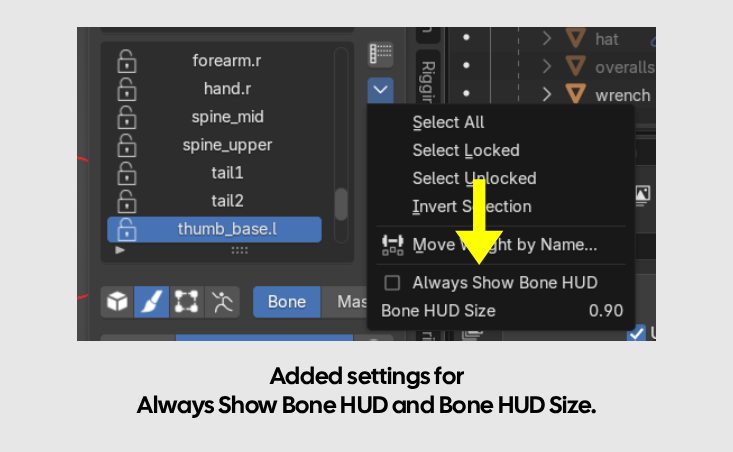
- Added an option for "Always show bone display" to keep the Bone HUD visible all the time, located in the More Button next to the Deform Bone List (enabled by default).
- Moved the option for adjusting Bone Size into the More Button of the Deform Bone List as well.
Selection Update¶
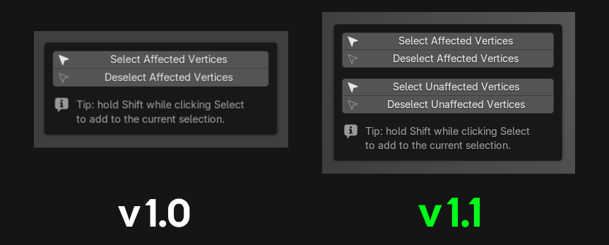
- Added options to select unaffected vertices / deselect unaffected vertices for greater flexibility in use.
Others Bug fix and improve¶
- We improved the Transfer Weight options and behavior to make them easier to understand. You can read more in Weight Transfer
- The Transfer Weight list and Active Mesh list now support selecting multiple items at once.
- Improved the system so it can smooth between existing bone weights and empty weight areas.
- Now supports Apple M-Series.
- Improved the popup width to auto-size according to the item names automatically.
- Improved icons to clearly distinguish between meshes using layer-based skin weights and native weights.
1.0.13¶
1.0.13
- Weight Transfer fix: when “Use Selected Vertices Only” is on for the source, the mask is now taken from the same selected area as the weight. Before, it could come from the nearest unselected area.
- Improved Mask Color to see more clear.
- Fix deform bone list , weight color display error when amarture have no deform bones
1.0.12¶
1.0.12
- Improved performance when applying weights.
- Fixed skin weights breaking after editing meshes.
1.0.11¶
1.0.11
- Entering Blender's native Weight Paint Mode no longer forces the add-on mode, preserving standard workflows for non-deform vertex groups.
1.0.10¶
1.0.10
- Added a status for meshes with layer data but missing an armature modifer.
- Added pressure sensitivity toggles for brush size, hardness, and strength.
- Added a Normalize Weights button to the Limit Total popup.
- Increased the maximum brush size limit for surface brushes.
- Fixed an issue where applying weights affected non-deform vertex groups. (Crucial Bug)
1.0.9¶
1.0.9
- Added a button to switch to Object Mode.
- Added a fade-out effect when exit from Bone Picker.
- Added a Clear button to the Transfer Settings popup.
- Improved add-on performance when switching layers and smoothing weights.
- Fixed Armature not hiding when entering Weight Paint mode.
- Fixed Smoothing weight error when increast to extreme values.
1.0.8¶
1.0.8
- Major UI redesign.
- Added shortcut customization to the Settings button.
- Added new features: "Set Total" (limit max bone influences) and "Hammer" (average vertex weights).
- Removed auto-update feature.
- Improve add-on performances.
1.0.7¶
1.0.7
- Improved the bind mesh dropdown in the List Viewer to be easier to use — see Clean-up Layer Data for details.
- Improved the Weight Transfer interface to be easier to use.
1.0.6¶
1.0.6
- Shortcut Guide: Press Alt + 4 while editing to toggle the Shortcut Guide.
- Mask Edit Toggle: Press Alt + 1 while editing to toggle Mask Edit mode.
- Selection Persistence: Exiting Mask Edit mode now preserves all active selections in the Deform Bone list.
- Repeat Last Operation: Added support for Shift + R to repeat the most recent Apply Weight operation.
- UI Improvements: Enhanced the user interface for both the Layer List and Deform Bone List sections.
Bug Fixes :
- Multi-Color Mode: Fixed display updates to ensure higher accuracy when using Mirror Weight and Auto Assign Weight.
- Scale Weight Distribution: Improved the scaling behavior to distribute weight more intelligently based on the rig hierarchy.
1.0.5¶
1.0.5
- Bone Picker now shows a header text indicating that bone picking mode is active.
- Bone Picker now displays the name of the hovered bone.
- Bone Picker has a redesigned color scheme for showing bone selection status.
- Improved performance when hovering bones with Multi Color mode enabled.
- Extended add-on support to Blender 4.2 LTS and newer.
Bug Fixes :
- Fixed the Viewport Overlay not being restored when exiting Edit Weight mode back to the user's normal edit mode.
- Fixed the Initialize system running again automatically when selecting a mesh.